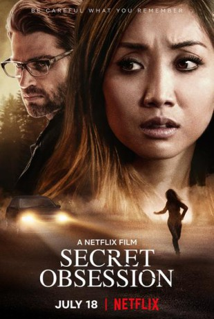

#11529 Secret Obsession
 
 IMDB-Wertung: 4.3 / 10
IMDB-Wertung: 4.3 / 10  Metascore: 0
Metascore: 0 
Nach einer brutalen Attacke leidet eine junge Frau an Gedächtnisverlust. Als ihre Erinnerungen langsam wieder zurückkehren, merkt sie, dass sich niemandem trauen kann. Selbst ihre engsten Vertrauten werden plötzlich zu potentiellen Feinden.
Jahr: 2019
Dauer: 97 Minuten
FSK: 12
Land: USA Studio: NetflixTonspuren: - , - , - , - , - ,
Untertitel: Deutsch,
Auflösung: 1080p (1920x816) Größe: 4587 MB
Genre: Thriller, Drama
Regisseur: Peter Sullivan
Drehbuch: Peter Sullivan, Kraig Wenman
Soundtrack: Jim Dooley
Darsteller:
- Brenda Song als Jennifer Williams
 Mike Vogel als Russell Williams
Mike Vogel als Russell Williams Dennis Haysbert als Detective Frank Page
Dennis Haysbert als Detective Frank Page Ashley Scott als Nurse Masters
Ashley Scott als Nurse Masters Paul Sloan als Jim Kahn
Paul Sloan als Jim Kahn Daniel Booko als Groom
Daniel Booko als Groom- Scott Peat als Ray
- Blair Hickey als Scott
 Michael Patrick McGill als Captain Fitzpatrick
Michael Patrick McGill als Captain Fitzpatrick- Casey Leach als Charlie
- Jim Hanna als Dr. East
- Ciarra Carter als Desk Nurse
 Eric Etebari als Xander
Eric Etebari als Xander- Jennifer Peo als Mother
- Bella Stine als Girl
- Joyce Greenleaf als Older Neighbor
- Elayn J. Taylor als Older Woman
 Alan Pietruszewski als ER Doctor
Alan Pietruszewski als ER Doctor- David Burtka als Russell Williams
- Dana Byrne als Jennifer's Mom
- Kati Salowsky als Cashier
Datei: X:\2019(N-Z)\Secret Obsession (2019, FSK12, 1920x816).mkv seit 22.07.2019
Festplatte: HD 2018(G-Z)-2019(A-Z)
 Es gibt insgesamt 62 Filme in der Gruppe '2019(N-Z)'
Es gibt insgesamt 62 Filme in der Gruppe '2019(N-Z)'